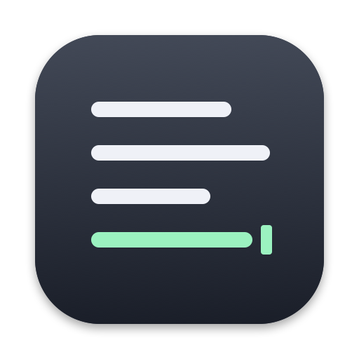
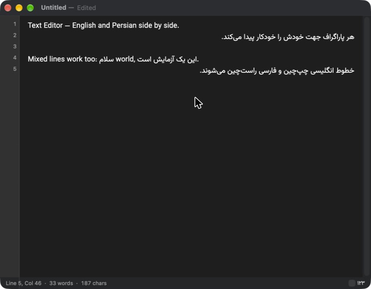

A native macOS plain-text editor with first-class Persian (RTL) and English (LTR) support, including mixed bidirectional text.
ویرایشگر متن بومی مک، با پشتیبانی کامل از فارسی و انگلیسی
Download for macOS View on GitHubv1.0.0 · Apple Silicon · macOS 13+ · not notarized: right-click the app and choose Open the first time

Every paragraph finds its own direction, so RTL and LTR lines sit correctly in one file with no mode switching.
Treats ي/ی and ك/ک as the same letter, so text typed on Arabic keyboards is still found.
Windows-1256 files open correctly and are saved back in the same encoding.
HTML, RTF and PDF keep Persian right-aligned and English left-aligned.
Show ۱۲۳ instead of 123 in the status bar.
About 400 KB, AppKit, native tabs and system spell check. No Electron, account or cloud. Your files stay plain .txt.
Each paragraph picks its own direction automatically. Force it with ⌘⇧→ or ⌘⇧←.
Standard macOS tabs and windows. ⌘T opens a new tab.
Optionally ignores ي/ی and ك/ک differences. ⌘⌥F, alongside the regular find bar ⌘F.
English and Persian, with automatic language detection.
Line numbers on by default (⌘⌥L). Status bar shows line, column, words and characters, with Latin or Persian digits.
Switch from View → Theme.
⌘⇧E exports the current text. Your document stays a plain .txt file.
| Format | What you get |
|---|---|
| .txt | The text as-is, UTF-8 |
| .md | The text as-is with a Markdown extension |
| .html | One paragraph per line, dir="auto" so Persian and English each read correctly |
| .rtf | Rich text with font and per-paragraph direction |
| A4 pages, light theme, Persian right-aligned and English left-aligned |
brew install xcodegen xcodegen generate xcodebuild -project TextEditor.xcodeproj -scheme TextEditor \ -configuration Debug -derivedDataPath build build open build/Build/Products/Debug/TextEditor.app # core logic tests cd EditorCore && swift test
Swift 5.9, AppKit, TextKit 2. The text logic (stats, Persian normalisation, encoding detection) lives in a separate Swift package, EditorCore.